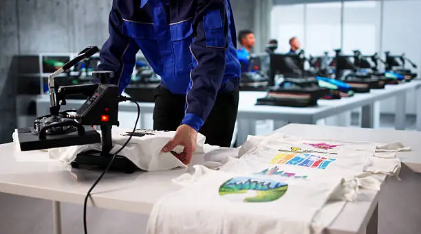

Nuestra Historia
En Print & Wear creemos que una camiseta es mucho más que una prenda de vestir: es un lienzo en blanco para expresar ideas, unir equipos y crear identidad.
Nacimos con el objetivo de simplificar el proceso de impresión textil, eliminando las complicaciones y ofreciendo un servicio donde la calidad técnica y el diseño limpio van de la mano. Nos apasiona cuidar cada detalle, desde la selección del algodón hasta el tipo de tinta que aplicamos en el taller.
Trabajamos de forma cercana con marcas locales, empresas y creadores independientes, asegurándonos de que cada proyecto refleje fielmente su esencia con acabados duraderos y profesionales.
